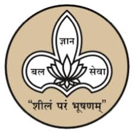

125 YEARS JOURNEY FOR WOMENS EMPOWERMENT THROUGH EDUCATION
Maharshi Karve Stree Shikshan Samstha (MKSSS), Pune provides hostel facility to its students. Hostel at Deccan Campus of MKSSS is true “A Home Away From Home”. The hostel complex over **students can be an accommodated at ease. It is the endowed with all facilities. Bright sunshine and fresh ambience hostel complex are crafted to suit the requirements of all college students making their stay an accomplished one. The hostel provides good, safe and reliable accommodation at economical charges. Along with the boarding; food arrangements are made available for students. Wholesome, nutritious, tasty Indian food at an affordable rate is made available.